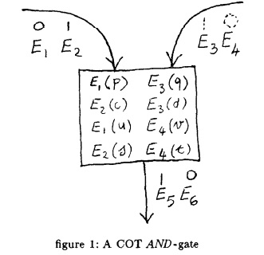
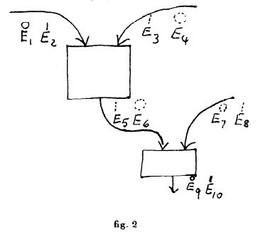

Multiparty Computation

Overview
Introduction
How to Play Any Mental Game is a 1987 work by Goldreich, Micali, and Widgerson that offers a completeness theorem for any protocol with honest majority. Based on their 1986 work How to Solve Any Protocol Problem(PDF), it brings together essentially every major piece of cryptography into one central paper, providing a key piece in the development of multiparty computation protocols. By presenting the building blocks necessary to build any general problem into a private and robust protocol, this paper provides the benchmark by which every new protocol is measured.
Goldreich et al.'s methods here are often compared with the garbled circuits presented by Yao a year earlier.
This paper is a demonstration of how oblivious transfer is complete with respect to multiparty computation; that is, any oblivious transfer primitive can construct a multiparty computation evaluator for any function.
Goals and Results
How to Play Any Mental Game makes a big promise with both its title and its premise, and it delivers on that promise fully. Given any Turing machine \(M\) for \(n\) players, it provides a meta-protocol by which we can produce a new distributed protocol \(D\), making the following guarantees:
- No number of passive adversaries will be able to learn anything from \(D\) that they could not have learned by using a trusted party instead.
- As long as the majority of players are not malicious, the output of \(D\) will be identical to \(M\) (or, in the case of \(M\) being probabilistic, will have an identical probability distribution).
Since this is true for any Turing machine, this means that this paper provides a completeness theorem. Any singular function can be computed using cryptographic multiparty computation, assuming honest majority. This paper does not address problems in which different people compute different functions.
In particular, Goldreich et al. incorporate oblivious transfer, hardcore bits, zero knowledge proofs, 5-permutations, game theory concepts, and the translation from Turing machines to circuits (and circuits to straight line programs) into their meta-protocol.
Assumptions
All of the above operates under the assumption that trapdoor functions exist, a relatively low burden of assumption. Only a year later, Chaum, Crépeau, and Damgård demonstrated a similar completeness theorem for information theoretic security using an even lower burden of assumption.
Definitions
Definition 1 - Computational IndistinguishabilityTwo poly-bounded families of [random variable]s are computationally indistinguishable if, for all poly-size families of circuits \(C\), for all constants \(f\gt0\) and all sufficiently large \(k\in N\),
$$|P(U,c,k)-P(V,C,k)|\lt k^{-f}$$
where \(P(U,C,k)\) denotes the probability that \(C_k\) outputs 1 on input a random string from \(U_k\).
Definition 2 - Turing machine gameA Tm-game problem consists of a pair \((\bar{M},1^k)\), that is, the description of a Turing machine \(M\) and an integer \(k\), the security parameter, presented in unary. \(n\) parties, respectfully and individually owning secret inputs \(x_1,\dots,x_n\) would like to correctly run \(M(x_1,\dots,x_n)\) without revealing (to the other players) more about the \(x_i\)'s than is already contained in the output of the Turing machine itself.
Definition 3 - Turing Machine game solver for Passive AdversariesLet \(S\in\)\(PDA\). We say that \(S\) is a Tm-game solver for passive adversaries if, for all Tm-game problems \((\bar{M},1^k)\) given as common input and for all (respective) private inputs \(x_1,\dots,x_n\),
-
(Agreement constraint)
At the end of each execution of \(S\), for all machines \(i\) and \(j\), \(i\)'s private output equals \(j\)'s private output.
-
(Correctness constraint)
\(OS_1(x_1,\dots,x_n,(\bar{M},1^k))\)\(=M(x_1,\dots,x_n)\), and
-
(Privacy constraint)
\(\forall T\subset\{1,\dots,n\}\) and \(\forall A\in PPT, \exists B\in PPT\) such that \(\{A_k\}\) and \(\{B_k\}\) are computationally indistinguishable RVs. Here
\(A_k=A((\bar{M},1^k),\)\(HS((\bar{M},1^k))\),\(HS_T((\bar{M},1^k))\)\()\)
and
\(B_k=B((\bar{M},1^k),M(x_1,\dots,x_n),\{(i,x_i):i\in T\})\)
Theorems
Theorem 1If trapdoor functions exist, there exists a Tm-game solver for passive adversaries.
Theorem 2Given \(n\) players willing to play, less than half of which are malicious, all Tm-games are playable.
Theorem 3If any trapdoor function exists, any game is playable if more than half of the players are honest.
Protocols
One-Out-of-Two Oblivious Transfer
- Number of parties: 2
- Function(s): Alice does not calculate anything; Bob receives his choice of one bit from Alice
- Privacy constraints: Alice does not learn which bit Bob received. Bob does not learn the other bit that Alice has.
- Cheating: Bob is able to determine both bits if he does not follow the protocol. Alice cannot cheat.
- Bits exchanged: \(\operatorname{O}(k)\) where \(k\) is the security parameter of their trapdoor permutation.
- Runtime: \(\operatorname{O}\left(T(k)\right)=\operatorname O(\operatorname{poly}(k))\) for T(k) being the highest runtime between the trapdoor permutation, its decryption, or the calculation of its hardcore bit (all of which are polynomial).
- Assumptions: The existence of trapdoor permutations.
- Implementations: We have our own version in Java here.
Combined Oblivious Transfer
- Number of parties: 2
- Function(s): Alice has some function \(g\) with two inputs of size less than \(l\). Alice has input \(a\), Bob has input \(b\). Alice calculates \(g(a,b)\), Bob does not calculate anything.
- Privacy constraints: Alice does not learn anything besides \(g(a,b)\); Bob does not learn \(a\), \(g(a,b)\).
- Cheating: If Bob does not follow the protocol, he can change the outcome of the protocol, but not to his advantage. If Alice does not follow the protocol, she can learn Bob's input and alter the outcome of the protocol but not necessarily to her advantage.
- Subprotocols: One-Out-of-Two Oblivious Transfer, above.
- Bits exchanged: \(\operatorname{O}(kn)\), where \(k\) is the security parameter, and \(n\) is the number of NAND, AND, or NOT gates required to describe \(g\).
- Runtime: \(O\left(n\cdot T(k)\right)\)\(=O(n\cdot\operatorname{poly}(k))\), where \(k\) is the security parameter, \(n\) is the number of gates used to describe \(g\), and \(T(k)\) is the runtime of the encryption algorithm used (both within the one-out-of-two OT protocol, and for the encryptions used for gate input and output).
- Assumptions: The existence of trapdoor permutations.
5-Permutation Computation
- Number of parties: \(n\) parties, each with an input \(x_i\) of length \(l\) bits
- Function(s): Any function \(f(x_1,x_2,\dots,x_n)\) which can be expressed in a straight-line program of size \(C(f, l)\).
- Privacy constraints: Passive adversaries can learn nothing. Up to \(\frac n 2\) malicious adversaries can learn nothing.
- Cheating: As is, malicious adversaries can change the output of the protocol without detection, though not to their own advantage.
- Subprotocols: Combined Oblivious Transfer (and therefore, within that, one-out-of-two oblivious transfer)
- Bits exchanged: \(\operatorname O(kn^2\cdot C(f,l))\), where \(k\) is the security parameter, \(n\) is the number of parties, and \(C(f,l)\) is the size of the straight-line program for \(f\).
- Runtime: \(\operatorname O\left(n^2\cdot C(f,l)\cdot T(k)\right)\)\(=\operatorname O(n^2\cdot C(f,l)\cdot\operatorname{poly}(k))\) where \(k\) is the security parameter, \(n\) is the number of parties, \(C(f,l)\) is the size of the straight-line program for \(f\) on inputs of size \(l\), and \(T(k)\) is the runtime of an encryption algorithm.
- Assumptions: The existence of trapdoor permutations. Additionally, the presence of authenticated, secrecy-maintaining channels between each pair of parties.
- Note: We can be a bit more specific if we specify only boolean functions that run in time \(\operatorname O(t(nl))\). Since circuit complexity for a Turing machine which decides some language \(L\) is \(\operatorname O(t^2(nl))\), we know bits exchanged to be in \(\operatorname O\left(k\left( n\cdot t(nl)\right)^2\right)\) and runtime to be in \(\operatorname O\left(T(k)\cdot\left(n\cdot t(nl)\right)^2\right)\).
Tm-game Solver with Malicious Adversaries
- Number of parties: \(n\) parties, each with an input \(x_i\) of length \(l\) bits
- Function(s): Any function \(f(x_1,x_2,\dots,x_n)\) which can be expressed in a straight-line program of size \(C(f,l)\).
- Privacy constraints: Passive adversaries can learn nothing. Up to \(\frac n 2\) malicious adversaries can learn nothing.
- Cheating: Malicious adversaries have a negligible advantage (\(\operatorname O(2^{-m})\), for some confidence factor \(m\)), of altering the outcome of the protocol successfully.
- Subprotocols: A verifiable secret sharing scheme; a verifiable multiparty coin flipping protocol; a zero-knowledge proof system; 5-permutation computation; combined oblivious transfer; one-out-of-two oblivious transfer.
- Bits exchanged: \(\operatorname{O}\left(kln^2+n\cdot S(k)+mk^2n^2\cdot C(f,l)\right)\). We assume:
- \(k\) is the security parameter, \(n\) is the number of parties, \(l\) is the bit-length of their inputs.
- The encryption protocol requires the exchange of \(\operatorname O(k)\) bits.
- The verifiable secret sharing scheme shares \(n\) inputs of size \(l\) using \(\operatorname O(kln^2)\) bits (\(\operatorname O(knl)\) bits for \(n\) inputs).
- The coin flipping protocol requires an exchange of \(\operatornme O(S(k))\) bits per party.
- Each run of the zero-knowledge proof system exchanges \(\operatorname O(k)\) bits.
- We are computing a function with a straight-line program of size \(C(f,l)\).
- Runtime: \(\operatorname{O}\left(T_{VSS}(k,n,l)+T_R(k,n,l)+mn^2\cdot C(f,l)\cdot T_E(k)\cdot T_{ZKP}(k)\right)=\operatorname O(\operatorname{poly}(n,mk,C(f,l)))\). We assume:
- \(k\) is the security parameter, \(n\) is the number of parties, \(l\) is the bit-length of their inputs.
- We are using an encryption protocol which runs in time \(\operatorname O(T_E(k))\).
- We are using a verifiable secret sharing scheme that shares \(n\) inputs of size \(l\) in time \(\operatorname O(T_{VSS}(k,n,l))\)
- We are using a coin flipping protocol that distributes enough random bits to everyone in time \(\operatorname O(T_{R}(k,n,l))\)
- We are using a zero-knowledge proof system \(m\) times on every operation, and each run is in time \(\operatorname O(T_{ZKP}(k))\)
- We are computing a function with a straight-line program of size \(C(f,l)\).
- Assumptions: The existence of trapdoor permutations. Additionally, the presence of secret, authenticated channels between each pair of parties.
Further Reading
The construction in this paper is often compared and contrasted with Yao's Garbled Circuit, which can be found here.
This paper is part of a series covering the completeness theorems on tolerability of adversarial structures:
- How to Play Any Mental Game (1987): Cryptographic Security for Honest Majority, No Fault Tolerance
- Multiparty Computation Ensuring Privacy... (1988): Information-Theoretic Security for One Party, Negligible Probability of Cheating
- Multiparty Unconditionally Secure Protocols (1988): Information-Theoretic Security for \(2n/3\) Honest Parties, Negligible Probability of Cheating
- Completeness Theorems for Non-Cryptographic... (1988): Information-Theoretic Security for \(2n/3\) Honest Parties, Perfectly Fault Tolerant for \(2n/3\) Honest Parties
- Verifiable Secret Sharing and Multiparty Protocols... (1989): Information-Theoretic Security for Honest Majority, Negligible Probability of Cheating
Referencing This Paper
To cite this paper, simply copy and paste the below into your citation:
O. Goldreich, S. Micali, and A. Wigderson. How to Play Any Mental Game or a Completeness Theorem for Protocols with Honest Majority. Proceedings of the Nineteenth Annual ACM Symposium on Theory of Computing, pages 218–229. ACM. 1987.
Annotated Paper (extended abstract)
Abstract
We present a polynomial-time algorithm that, given as input the description of a game with incomplete information and any number of players, produces a protocol for playing the game that leaks no partial information, provided the majority of the players is honest.
Our algorithm automatically solves all the multiparty protocol problems addressed in complexity-based cryptography during the last 10 years. It actually is a completeness theorem for the class of distributed protocols with honest majority. Such completeness theorem is optimal in the sense that, if the majority of the players is not honest, some protocol problems have no efficient solution.
1. Introduction
Before discussing how to "make playable" a general game with incomplete information (which we do in section 6) let us address the problem of making playable a special class of games, the Turing machine games (Tm-games for short).
Informally, \(n\) parties, respectively and individually owning secret inputs \(x_1,\dots,x_n\) would like to correctly run a given Turing machine \(M\) on these \(x_i\)'s while keeping the maximum possible privacy about them. That is, they want to compute \(y=M(x_1,\dots,x_n)\) without revealing more about the \(x_i\)'s than it is already contained in the value \(y\) itself. For instance, if \(M\) computes the sum of the \(x_i\)'s, every single player should not be able to learn more than the sum of the inputs of the other parties. Here \(M\) may very well be a probabilistic Turing machine. In this case, all player want to agree on a single string \(y\), selected with the right probability distribution, as \(M\)'s output.
The correctness and privacy constraint of a Tm-game can be easily met with the help of an extra, trusted party \(P\). Each player \(i\) simply gives his secret input \(x_i\) to \(P\). \(P\) will privately run the prescribed Turing machine, \(M\), on these inputs and publicly announce \(M\)'s output. Making a Tm-game playable essentially means that the correctness and privacy constraints can be satisfied by the \(n\) players themselves, without invoking any extra party. Proving that Tm-games are playable retains most of the flavor and difficulties of our general theorem.
2. Preliminary Definitions
2.1. Notation and Conventions for Probabilistic Algorithms
We emphasize the number of inputs received by an algorithm as follows. If algorithm \(A\) receives only one input we write "\(A(\cdot)\)", if it receives two inputs we write \(A(\cdot,\cdot)\) and so on.
RV will stand for "random variable"; in this paper we only consider RVs that assume values in \(\{0,1\}^*\). In fact, we deal almost exclusively with random variables arising from probabilistic algorithms. (We make the natural assumption that all parties may make use of probabilistic methods.)
If \(A(\cdot)\) is a probabilistic algorithm, then for any input \(x\) the notation \(A(x)\) refers to the RV which assigns to the string \(\sigma\) the probability that \(A\), on input \(x\) outputs \(\sigma\). If \(S\) is a RV that assigns positive probability only to a single element \(e\), we denote the value \(e\) by \(S\). (For instance, if \(A(\cdot)\) is an algorithm that, on input \(x\) outputs \(x^3\), then we may write \(A(2)=8\). This is in agreement with traditional notation.)
If \(f(\cdot)\) and \(g(\cdot,\cdots)\) are probabilistic algorithms then \(f(g(\cdot,\cdots))\) is the probabilistic algorithm obtained by composing \(f\) and \(g\) (i.e. running \(f\) on \(g\)'s output). For any inputs \(x,y,\cdots\) the associated RV is denoted \(f(g(x,y,\cdots))\).
Let PA denote the set of probabilistic polynomial-time algorithms. We assume that a natural representation of these algorithms as binary strings is used.
By \(1^k\) we denote the unary representation of integer \(k\).
2.2. Game Networks and Distributed Algorithms
Let us start by briefly describing the communication networks in which games will be played. This is the standard network supporting the execution of multiparty protocols.
Informally, a game network of size \(n\) is a collection of (interacting) probabilistic polynomial-time Turing machines. Each machine has a private read-only input tape, a private write-only output tape and a private read-write work tape. All machines share a common read-only input tape and a common write-only output tape. The \(n\) machines communicate by means of \(n\cdot(n-1)\) special tapes. Machine \(i\) publicly sends messages (strings) to machine \(j\) by means of a special tape \(i \rightarrow j\) on which only \(i\) can write and that all other machines can read. There is a common clock whose pulses define time intervals \(1,2,\dots\). Messages are sent at the beginning of a time interval and are received within the same time interval. We stress, though, that our result is largely independent from the specific communication mechanism, and also holds for "less equipped" communication networks.1
That makes this network synchronous, authenticated, non-secret, and with no broadcast channel.
A probabilistic distributed algorithm \(S\) running in a game network of size \(n\) is a sequence of programs \(S=(S_1,\dots,S_n)\), where \(S_i\) is the program of the \(i\)th Turing machine in the network. We denote by PDA the class of all probabilistic polynomial-time distributed algorithms.
Let \(S\in\)PDA run in a game network of size \(n\) with common input \(CI\) and (respective) private inputs \(x_1,\dots,x_n\). Then \(HS(x_1,\dots,x_n,CI)\) denotes the RV consisting of the public history that is the sequence of all messages sent in an execution of \(S\); \(HS_i(x_1,\dots,x_n,CI)\) denotes the RV consisting of the internal configurations of machine \(i\), that is the sequence of the internal configurations of machine \(i\) in an execution of \(S\); for \(T\subset \{1,\dots,n\}\), \(HS_T(x_1,\dots,x_n)\) denotes the vector of the private histories of the members of \(T\) in an execution of \(S\); and \(OS_i(x_1,\dots,x_n,CI)\) denotes the RV consisting of the private output of machine \(i\) in an execution of \(S\).
2.3. Adversaries
We consider two interesting types of adversaries (faulty machines) in a game network: passive ones (a new notion) and malicious ones (a more standard notion).
A passive adversary is a machine that may compute more than required by its prescribed program, but the messages it sends and what it outputs are in accordance to its original program. (Passive adversaries may be thought of as machines who only try to violate the privacy constraint. They keep on running their prescribed programs correctly, but also run, "on the side", their favorite polynomial time program to try to compute more than their due share of knowledge. In an election protocol, a passive adversary may be someone who respects the majority's opinion—and thus does not want to corrupt the tally—and yet wants to discover who voted for whom.)
A malicious adversary is, instead, a machine that deviates from its prescribed program in any possible action. That is, we allow the program of such a machine to be replaced by any fixed probabilistic polynomial-time program. (Malicious adversaries not only have a better change of disrupting the privacy constraint, but could also make the outcome of a Tm-game vastly different than in an ideal run with a trusted party.)
For more on both passive and malicious adversaries, see our tutorial chapter on Adversaries, or look in the research section under the Passive and Active Adversaries tags, or under the general Adversaries tag.
We allow machines in a game network to become adversarial in a dynamic fashion, during the execution of a protocol. We also allow adversarial machines (of either type) to undetectedly cooperate. Adversarial machines are not allowed, however, to monitor the private tapes or the internal state of good machines.
We believe the malicious-adversary scenario to be the most adversarial among all the natural scenarios in which cryptography may help.
Later, the idea of an external adversary who corrupts parties adaptively during the protocol is proposed, and it is a more adversarial problem which cryptography can solve
Jumping ahead, we will show that all Tm-games are playable with any number of passive adversaries or with \(\lt\frac{n}{2}\) malicious adversaries.
Keep in mind that this is operating under the assumption that adversaries run in PPT, and therefore only offers protection in the cryptographic sense. In an information theoretic setting, only up to \(\frac{n}{3}\) parties can be malicious, as shown by Chaum, Crépeau, and Damgård the next year.
2.4. Indistinguishability of Random Variables
Throughout this paper, we will only consider families of RVs \(U=\{U_k\}\) where the parameter \(k\) ranges in the natural numbers. Let \(U=\{U_k\}\) and \(V=\{V_k\}\) be two families of RVs. The following notion of computational indistinguishability expresses the fact that, when the length of \(k\) increases, \(U_k\) becomes "replaceable" by \(V_k\), in the following sense. A random sample is selected either from \(U\), or from \(V\), and it is handed to a "judge". After studying the sample, the judge will proclaim his verdict: 0 or 1. (We may interpret 0 as the judge's decision that that the sample came from \(U_k\); 1 as the decision that the sample came from \(V_k\).) It is then natural to say that \(U_k\) becomes "replaceable" by \(V_k\) for \(k\) large enough if, when \(k\) increases, the verdict of any computationally bounded judge becomes "meaningless", that is essentially uncorrelated to which of the two distributions the sample came from.
To formalize the notion of computational indistinguishability we make use of nonuniformity. Thus, our "judge", rather than polynomial time Turing machine, will be a poly-size family of circuits. That is a family \(C=\{C_k\}\) of Boolean circuits \(C_k\) with one Boolean output such that, for some constants \(e,d\gt0\), all \(C_k\in C\) have at most \(k^e\) gates and \(k^d\) Boolean inputs. In order to feed samples from our probability distributions to such circuits, we will consider only poly-bounded families of RVs. That is families \(U=\{U_k\}\) such that, for some constant \(e\gt0\), all RV \(U_k\in U\) assigns positive probability only to strings whose length is exactly \(k^e\). If \(U=\{U_k\}\) is a poly-bounded family of RVs and \(C=\{C_k\}\) a poly-bounded sequence of circuits, we denote by \(P(U,C,k)\) the probability that \(C_k\) outputs 1 on input a random string from \(U_k\). (Here we assume that the length of the strings that are assigned positive probability by \(U_k\) equals the number of Boolean inputs of \(C_k\).)
Definition 1 - Computational IndistinguishabilityTwo poly-bounded families of RV's are computationally indistinguishable if, for all poly-size families of circuits \(C\), for all constants \(f\gt0\) and all sufficiently large \(k\in N\),
$$|P(U,C,k)-P(V,C,k)|<k^{-f}$$
Simply put, the probability of being correct on an input approaches the probability of being incorrect up to a negligible distance.
This notion was already used by Goldwasser and Micali1 in the context of encryption, and by Yao2 in the context of pseudo-random generation. For other notions of indistinguishability and further discussion see 3.
Remark 1 - Let us point out the robustness of the above definition. In this definition, we are handing out computationally bounded "judge" only samples of size 1. This, however, is not restrictive. It should be noticed that the two families of RVs \(\{U_k\}\) and \(\{V_k\}\) are computationally indistinguishable with respect to samples of size 1 if and only if they are computationally indistinguishable with respect to samples whose size is bounded by a fixed polynomial in \(k\).
3. Tm-games with Passive Adversaries
Definition 2 - Turing machine gameA Tm-game problem consists of a pair \((\bar{M},1^k)\), that is, the description of a Turing machine \(M\) and an integer \(k\), the security parameter, presented in unary.
Let us now make some simplifications that will expedite our exposition. Without loss of generality in our scenario, we assume that, when \((\bar{M},1^k)\) is the common input in a game network, all private inputs have the same length \(l\) and that \(T(l)\), the running time of \(M\) on inputs of size \(l\), is less than \(k\).
Definition 3 - Turing machine Game Solver for Passive AdversariesLet \(S\in\)\(PDA\). We say that \(S\) is a Tm-game solver for passive adversaries if, for all Tm-game problems \((\bar{M},1^k)\) given as common input and for all (respective) private inputs \(x_1,\dots,x_n\),
-
(Agreement constraint)
At the end of each execution of \(S\), for all machines \(i\) and \(j\), \(i\)'s private output equals \(j\)'s private output.
-
(Correctness constraint)
\(OS_1(x_1,\dots,x_n,(\bar{M},1^k))\)\(=M(x_1,\dots,x_n)\), and
-
(Privacy constraint)
\(\forall\; T\subset\{1,\dots,n\}\) and \(\forall\;A\in PPT,\;\exists\;B\in PPT\) such that \(\{A_k\}\) and \(\{B_k\}\) are computationally indistinguishable RVs. Here
\(A_k=A((\bar{M},1^k),\)\(HS((\bar{M},1^k))\),\(HS_T((\bar{M},1^k))\)\()\)
and
\(B_k=B((\bar{M},1^k),M(x_1,\dots,x_n),\{(i,x_i):i\in T\})\)
Let us now interpret the above definition
The agreement constraint
This constraint essentially says that all machines agree on a single, common string as the output of \(S\).
The correctness constraint
This constraint ensures that the output of a game solver \(S\) coincides with the one of \(M\). As \(M\) may be probabilistic, the equality of the correctness constraint must be interpreted as equality between RVs.
The privacy constraint
Notice that passive adversaries appear in the above definition in an implicit way. Algorithm \(A\) can be thought as all the members of \(T\) being passive adversaries computing after an execution of \(S\). In fact, passive adversaries are obliged to send messages according to \(S\) and their private history, in an execution of \(S\), as an explicit input to \(A\). Let us stress that the private history of a machine \(i\) contains the name \(i\), the private input \(x_i\), and \(M\)'s output as well. Thus the privacy constraint essentially says that whatever the passive adversaries may compute after computing \(S\), they could also easily deduce from the desired \(M\)'s output \(y\) and their own private inputs (which they are entitled to have!). In fact, if they are given \(y\) by running \(S\), the passive adversaries will see, in addition to \(y\), only the public history and their own private history. However, whatever they could efficiently compute with this additional input, they could also have computed without it. In other words, \(S\) keeps whatever privacy of the inputs of the good parties is not "betrayed" by the value of \(y\) itself. For instance, if \(M\) computes the sum of the \(x_i\)'s, then the privacy constraint will allow the adversarial players to compute (at the end of \(S\)) essentially only the sum of the inputs of the good parties. As for another example, if \(M\) is the identity function, then the privacy constraint holds vacuously. Same if the set \(T\) is the set of all players.
Let us emphasize that \(T\) should be interpreted as the set of all passive adversaries, who can be interpreted as colluding together in order to determine more about the honest parties.
This is sometimes known as the ideal vs. real-world argument. From the point of view of the adversary, there is no difference between the 'ideal world' (where the protocol was performed by a trusted party instead) and the real world, where the protocol is being performed.
4. Hints on How to Play Tm-games with Passive Adversaries
At a first glance enforcing both correctness and privacy constraints of a Tm-game appears easy only for special cases of \(M\), say the ones computing a constant function. Nonetheless,
Theorem 1If trapdoor functions exist, there exists a Tm-game solver for passive adversaries.
In this extended abstract we limit ourselves to give a few indications, in an informal manner, about the proof of the above theorem.
Nonetheless, they give an excellent summary of how to build up to their main theorem, by presenting their building blocks one by one.
4.1. A New and General Oblivious Transfer Protocol
In 4, Rabin proposes the beautiful notion of an oblivious transfer. This is a probabilistic polynomial-time algorithm that allows A(lice), who knows the prime factorization of an integer \(n\), to send it to B(ob), who knows just \(n\), so that B will receive \(n\)'s factorization with probability ½ and A does not know whether or not B received it. Clearly, Rabin's notion of an OT supposes that factoring is computationally hard. Under this assumption, he proposed a protocol that, if A and B are allowed to be at most passive adversaries, correctly implements an OT. This protocol, however, may not work (i.e. no longer possesses a proof of correctness) if A and B are allowed to be malicious. Using the interactive proof-systems of 1, Fischer, Micali, Rackoff, and Wittenberg found5 a protocol that correctly implements OT under the simple (and in this context minimal) assumption that factoring is hard. Rabin's OT has proved to be a very fruitful notion, as exemplified by various applications proposed by Blum.6
A more general and useful notion of OT has been proposed by Even, Goldreich, and Lempel7, the one-out-of-two OT. In their framework, A has two messages, \(m_0\) and \(m_1\). By using a cryptosystem \(E\) she computes \(\sigma_0=E(m_0)\) and \(\sigma_1=E(m_1)\) and sends \(\sigma_0, \sigma_1\) to B. B chooses one of these encryptions, \(\sigma_i\). A one-out-of-two OT allows B to read the corresponding message \(m_i\), while A will not know which message B has read (whenever \(m_0\neq m_1\)). This notion achieves the right level of generality and is crucial to what follows. Even, Goldreich, and Lempel also proposed the first implementation of a one-out-of-two OT using public-key cryptosystems. Their protocol has the merit of having freed the implementation of an oblivious transfer from the algebraic setting to which it appeared to be confined. Their protocol, though, requires a quite strong set of assumptions even when the adversaries are only passive.
Below, we contribute a new protocol that correctly implements a one-out-of-two OT in presence of passive adversaries. The existence of trapdoor permutations suffices to prove the correctness of our protocol.
4.1.1. Trapdoor and One-Way Functions
A satisfactory definition of a trapdoor permutation is given in 8. Here, let us informally say that a family of trapdoor permutations \(f\) possesses the following properties:
- It is easy, given an integer \(k\), to randomly select permutations \(f\) in the family which have \(k\) as their security parameter, together with some extra "trapdoor" information allowing easy inversion of the permutations chosen.
- It is easy to randomly select a point in \(f\)'s domain.
- It is hard to invert \(f\) without knowing \(f\)'s trapdoor on a random element in \(f\)'s domain.
We can interpret the above by saying that a party A can randomly select a pair of permutations, \((f,f^{-1})\), inverses of each other. This will enable A to easily evaluate and invert \(f\); if now A publicizes \(f\) and keeps secret \(f^{-1}\), then inverting \(f\) will be hard for any other party. We may write \(f_k\) to emphasize that \(k\) is the security parameter of our permutation.
Trapdoor permutations are a special case of one-way permutations. These are permutations enjoying the three properties above, except that we do not insist that the trapdoor information exists.
4.1.2. Random Bits in One-Way Permutations
Our one-out-of-two OT protocol makes use of the trapdoor functions \(f\) hiding a random bit \(B_f\). Here \(B_f\) is a polynomial-time computable Boolean function; the word "bit" is appropriate as \(B_f\) evaluates to 1 for half of the values in \(f\)'s domain.
We say that \(\{B_f\}\) is a random bit in a family \(\{f\}\) of trapdoor permutations if \(\forall\) predicting algorithm Alg that, on inputs \(f=f_k\) and \(f(x)\), outputs, in \(T(k)\) steps, a guess for \(B_f((x))\) that is correct with probability \(\frac{1}{2}+\epsilon, \exists\)Alg' that, on inputs \(f\) and \(f(x)\), outputs \(x\) in \(\operatorname{poly}(T(k),\epsilon^{-1})\) expected time.
In other words, if you can determine \(B_f(x)\) from \(f(x)\) in time \(S\) with probability \(\epsilon\), you can determine \(x\) within time \(\frac{S}{\epsilon}^c\) for some \(c\). Note that it was originally written as just probability \(\epsilon\), but that is easily disproved by counterexample: a constant algorithm which returns \(1\) will be correct with probability \(\frac{1}{2}\), but does not suggest the existence of an algorithm which calculates \(x\) in constant time (\(\operatorname{poly}(T(k),2)\)), but rather implies nothing at all: since \(\epsilon=0\), it implies \(x\) can be calculated in infinite time (\(poly(T(k),\infty)\)).
Thus, \(f\) being trapdoor, no probabilistic, polynomial-time algorithm given \(f_k(x)\), can correctly predict \(B_{f_k}(x)\) with probability \(\geq\frac{1}{2}+\frac{1}{poly(k)}\). We might as well flip a coin. Thus, for a one-way permutation \(f\), given \(f(x)\) the value of \(B_f(x)\) cannot be guessed in polynomial time essentially better than at random.
Again note that probability of \(\frac{1}{2}+\frac{1}{poly(k)}\) is non-negligible, so it should be \(\geq\), not > as it was originally. Since by definition of a trapdoor permutation we cannot determine determine \(x\) given \(f(x)\) in polynomial time, \(\epsilon^{-1}\) must be greater than polynomial in \(k\), so \(\epsilon < \frac{1}{poly(k)}\), and therefore is negligible.
Then notion of a random bit in a one-way permutation was introduced by Blum and Micali9 who showed a random bit in the Discrete Logarithm Problem, a well known candidate for one-way permutation. Chor and Goldreich show random bits in the RSA function. Do all one-way functions have a random bit? We do not know the answer to this question, but Yao2 has shown the next best thing. Namely, that given a one-way (trapdoor) permutation \(f\), one can construct a one-way (trapdoor) permutation \(F\) with random bit \(B_F\) (For a detailed proof of this theorem see 10). Levin11 has actually proved a more general version of this theorem.
4.1.3. Our Protocol
Without loss of generality, we assume that the two messages in the one-out-of-two OT both consist of a single bit.
In our protocol, both \(A,B\in\)\(PA\). \(A\)'s inputs are a pair of bits \((b_0,b_1)\) and their corresponding pair of encryptions \((E(b_0),E(b_1))\) where \(E\) is a probabilistic encryption algorithm1. The pair \((E(b_0),E(b_1))\) is also an input to \(B\) who has an additional private input bit \(\alpha\). It is desired that, even if some party is a passive adversary, the following two properties hold:
- \(B\) will read the bit \(b_\alpha\), but will not be able to predict the other bit \(b_\bar{\alpha}\) essentially better than at random.
- \(A\) cannot predict \(\alpha\) better than at random.
We achieve this by means of the following protocol:
- \(A\) randomly selects \((f,f^{-1})\), a trapdoor permutation of size \(k\) (having a random bit \(B_f\)) together with its inverse. She keeps \(f^{-1}\) secret and sends \(f\) to \(B\).
Changed from trapdoor function to permutation, as is required for step 2 to make sense.
- \(B\) randomly selects \(x_0\) and \(x_1\) in \(f\)'s domain and computes \(z=f(x_0)\) and sends \(A\) the pair $$(u,v)=\begin{cases}(f(x_0),x_1)&\mbox{if } \alpha =0\\(x_0,f(x_1))&\mbox{if }\alpha =1\end{cases}$$
- \(A\) computes \((c_0,c_1)=(B_f(f^{-1}(u)),B_f(f^{-1}(v)))\). She sets \(d_0=b_0\bigoplus c_0\) and \(d_1=b_1\bigoplus c_1\) and sends \((d_0,d_1)\) to \(B\).
- \(B\) computes \(b_\alpha=d_\alpha\bigoplus B_f(x_\alpha)\)
First notice that \(A,B\in\) \(PA\) and that \(B\) correctly reads \(b_\alpha\). Property i) is satisfied as \(B\) only sees \(b_\bar{\alpha}\) XORed with a bit essentially 50-50 unpredictable to him. Thus he cannot correctly guess \(b_\bar{\alpha}\) essentially better than at random. Let us now show that ii) holds. As \(f\) is a permutation, randomly selecting \(x\) in \(f\)'s domain and computing \(f(x)\) yields a randomly selected element in \(f\)'s domain. Thus \((u,v)\) is a pair of randomly selected elements in \(f\)'s domain both if \(\alpha=0\) or \(\alpha=1\). As \((u,v)\) is the only message \(B\) sends to \(A\), not even with infinite computing power will \(A\) find out whether \(B\) has read \(b_0\) or \(b_1\).
Notice that the protocol makes use of the fact that the adversaries are at most passive in a crucial way. Should, in fact, \(B\) send \((u,v)=(f(x_0),f(x_1))\) in step 2, he will easily read both bits. Thus, we will make use of additional ideas to handle malicious adversaries.
Notice also that we never made use of the encryptions \(E(b_0)\) and \(E(b_1)\). \(b_0\) and \(b_1\) could have been bits in "\(A\)'s mind." We have added these encryptions for uniformity with the next protocol in which the two messages must appear encrypted. Another reason is that, when we will handle malicious adversaries, we will need these encryptions to define the problem.
It is easy to see that, having solved the single-bit messages case, we have also solved the case of arbitrary messages \(m_0\) and \(m_1\) of equal, known length \(l\). In fact, we can repeat the above protocol \(l\) times so that, if \(\alpha\) is 0 (1), \(B\) is required at the \(i\)-th time to learn the \(i\)th bit of \(m_0 (m_1)\).
We have a working implementation of this protocol in the implementation section. You can find it here.
4.2. Strengthening Yao's Combined Oblivious Transfer
In 12, Yao presented a protocol that we call combined oblivious transfer (COT). The protocol involves two parties A and B, respectively owning private inputs \(a\) and \(b\) and any chosen function \(g\). It possesses the following property: upon termination, A computes \(g(a,b)\), while B has no idea of what A has computed. If we think of \(a\) and \(b\) as secrets, B appears to be obliviously transferring a prescribed combination of his and A's secret to A. Yao implemented COT based on the assumption that factoring is hard, (which yields, as shown by 6) a particular trapdoor permutation. We strengthen his result by showing that COT can be correctly implemented based on any trapdoor permutation. We do this by using the one-out-of-two OT of section 4.1 within Yao's scheme. Let us consider first the case where \(a\) and \(b\) are bits and \(g\) is the Boolean \(AND\). Consider figure 1.
Here \(E_1,\dots,E_6\) are independently selected encryption algorithms, respectively having decryption keys \(D_1,\dots,D_6\). \(E_1\) and \(E_2\) label the first input-wire, \(E_3\) and \(E_4\) the second input-wire, and \(E_5\) and \(E_6\) the output-wire. Each row in the gate is formed by the encryption of two strings. \(c\) and \(d\) are two randomly selected strings whose bit-by-bit exclusive-or equals \(D_5\). \(p\) and \(q\) are two randomly selected strings whose XOR equals \(D_6\); so are \(s\) and \(t\); so are \(u\) and \(v\). The 4 rows have been put in the gate in random order. \(E_1E_2\) and \(E_5E_6\) are publicly labelled by complementary bits. \(E_3\) and \(E_4\) are each secretly labelled by a bit; more precisely, \(E_3\) is SECRETLY labelled 0 with probability ½ and \(E_4\) is labelled with the complement of \(E_3\)'s bit. (This secrecy is pictorially indicated by drawing \(E_3\) and \(E_4\)'s bits by a dotted line.) Define the value of a wire to be 0 (1) if one ONLY possesses the decoding algorithm of encryption algorithm labelled 0 (1). Then figure 1 is an and-gate. For instance, assume that both the input-wires have value 0. That is, one possesses only \(D_1\) and \(D_4\). Then one is able to decrypt both entries only in the third row. By taking the xor of \(u\) and \(v\), one easily obtains \(D_6\), but has no idea what \(D_5\) may be. Thus the output-wire has value \(0=AND(0,0)\).
Corrections: replaced \(m\) and \(n\) with \(c\) and \(d\) to match the diagram. Also replaced "or-gate" with "and-gate".
More information about the combined oblivious transfer protocol, see the paper in which Yao presented it.
To COTransfer \(AND(a,b)\), B generates a COT AND-gate like in figure 1, keeping for himself all decoding algorithms and all the strings in the rows. Then he gives A the decoding algorithm of the second input-wire that corresponds to the value of \(b\), his own input. Notice that as the association between \(E_3,E_4\) and 0,1 is secret (and \(E_1,E_2,E_3,E_4\) enter symmetrically in the gate rows), this will not betray \(b\) at all. Now A will get either \(D_1\) or \(D_2\) according to the value of \(a\) by means of our one-out-of-two OT. Thus, B will not know which algorithm she got. At this point A can easily compute the value of the output wire. Thus, she will be the only one to know \(AND(a,b)\).
It is trivial to build a COT NOT gate. Notice that B may also keep secret the corresponding between 0,1 and \(E_5,E_6\).
Specifically, in a NOT gate, Alice has \(D_0\) (\(D_1\)) transferred to her, and they decode \(D_3\) (\(D_2\)), where \(D_0,D_2\) correspond to 0, and \(D_1,D_3\) correspond to 1. This is just as simply done within a gate (that is, by switching the order of the input(s) or outputs of a gate).
This allows the output wire to become an input wire of another gate. If the encryption algorithms of this second gate are publicly labelled 0/1 (see fig. 2), we see that A may evaluate any 2-gates function on her and B's inputs, without knowing intermediate results. Better said, B can "COTransfer" the value of any 2-gates function. By cascading this way COT AND-gates and COT NOT-gates (which are trivial to design), we can see that B can COTransfer the value of any function, provided that there is an upper bound to the length of A's and B's inputs, (else, the length of the inputs will be betrayed).
Note that the NAND gate is complete on GF(2), so we can indeed create any function.
There is soon to be an implementation of this within the site's implementation GitHub. Currently, we have a regular circuit correctly implemented; garbling will follow.
4.3. The Tm-game Solver for passive adversaries
Recall that a Tm-game solver wants to compute \(M(x_1,\dots,x_n)\) while respecting the privacy constraint. We want to use COT as a subroutine to construct a Tm-solver. This does not appear to be straightforward. For instance, if two parties \(i\) and \(j\) use COT so that \(i\) will compute \(g(x_i,x_j)\) for some function \(g\), this would already be a violation of the privacy constraint. Recall also that the Tm-game solver has to be polynomial not only in \(M\)'s running time, but also in \(n\), the number of players.
We find a way out by making special use of a lemma of Barrington's13 that simulates computation by composing permutations in \(S_5\), the symmetric group on 5 elements. The general picture is the following. First, transform the Turing machine \(M\) of a Tm-game to an equivalent circuit \(C\) in a standard way. The Boolean inputs of \(C\) will be \(b_1^1,\dots,b_l^1,\dots,b_1^n,\dots,b_l^n\), the bits of the \(n\), \(l\)-bit long inputs of our parties. This circuit \(C\) is then transformed to straight-line program as in 13. This straight-line program is essentially as long as \(C\) is big. In it,
For some notes on 5-permutations, see the short section at the bottom of the page.
- 0,1 are encoded by two (specially selected) 5-permutations
- the variables range in \(S_5\) and
- each instruction consists of multiplying (composing) two 5-permutations \(\sigma\) and \(\tau\), where \(\sigma\) (\(\tau\)) is either a constant, a variable, or the inverse (in \(S_5\)) of a variable.
Exactly when and how to perform each of these instructions in order to compute a program is explained by Barrington, and is outside the scope of this paper.
At the start, all parties take their private bits and encode them by a 5-permutation \(\sigma\) as in 13. Then each party divides \(\sigma\). That is, each party selects at random \(n-1\) 5-permutations \(\sigma_1,\dots,\sigma_{n-1}\) and gives the pair \((i,\sigma_i)\) to party \(i\) (keeping one pair). Each party then sets \(\sigma_n=(\sigma_1\cdots\sigma_{n-1})^{-1}\cdot\sigma\) and gives \((n,\sigma_n)\) to party \(n\). Now, inductively, assume that each variable is divided among the parties. That is, for each variable \(\sigma\), each player \(i\) possesses an index permutation pair \((x,\sigma_x)\) so that \(\prod\limits_{x=1}^n\sigma_x=\sigma\) and, given only \(n-1\) pieces, \(\sigma\) cannot be guessed better than at random. We now want to show that each instruction can be performed (i.e. that each party can compute an individual piece of the result) respecting the privacy constraint. There are essentially 3 cases.
Case 1: The instruction is of the form \(\sigma\cdot c\), where \(\sigma\) is a variable and \(c\) a constant. By induction, each party has a piece of the form \((x,\sigma_x)\). Then the party owning the piece \((n,\sigma_n)\) sets his new piece to be \((n,\sigma_n\cdot c)\) and all other parties leave their pieces untouched. It is immediately checked that the ordered product of the new pieces is \(\sigma\cdot c\) and that privacy has been preserved against \(n-1\) passive adversaries.
Case 2: The instruction is of the form \(\sigma^{-1}\cdot c\) where, again, \(\sigma\) is a variable and \(c\) a constant. It will be enough to show how to compute pieces for \(\sigma^{-1}\) respecting the privacy constraint. To do this, if a party has a piece \((x,\sigma_x)\), that party sets the new piece to be \((n-x+1, \sigma_x^{-1})\).
Case 3: the instruction is of the form \(\sigma\cdot\tau\), where both \(\sigma\) and \(\tau\) are variables. Then \(\sigma\cdot\tau=\sigma_1\cdots\sigma_n\cdot\tau_1\cdots\tau_n\), and assume for simplicity that party \(i\) possesses piece \(\sigma_i\) and \(\tau_i\). Unfortunately, party 1 cannot compute his or her piece of \(\sigma\cdot\tau\) by multiplying the two pieces known to him or her. In fact, they are \(n\) positions apart in the product and \(S_5\) is not commutative (a fact crucial in Barrington's argument). The idea will then consist of making "partial progress". That is, moving party 1's pieces closer together by "swapping" \(\sigma_n\) and \(\tau_1\). This can be correctly accomplished by giving party 1 a piece \(\tau_1'\) and party \(n\) a piece \(\sigma_n'\) so that \(\tau_1'\cdot\sigma_n'=\sigma_n\cdot\tau_1\). This way the product of the new (and newly ordered pieces) would remain \(\sigma\cdot\tau\).
So more specifically, we want party \(i\) for \(i\leq\frac{n}{2}\) to have \(\sigma_{2i-1},\sigma_{2i}\), and party \(i\) for \(i\gt\frac{n+1}{2}\) to have \(\tau_{2i-n},\tau_{2i-n+1}\). If we have an odd number of parties, party \(\frac{n+1}2\) will have pieces \(\sigma_n,\tau_1\). Since we can only swap pieces that are adjacent to each other in the overall product, we will need to perform \(\operatorname O(n^2)\) swaps. [Paragaph break not originally present.]
[Case 3 cont.:] One way of doing this would be of having party 1 and party \(n\) tell each other \(\sigma_n\) and \(\tau_1\). However, this would violate the privacy constraint with respect to a set of \(n-1\) passive adversaries. Instead, we use COT in the following way. Party \(n\) randomly selects a 5-permutation \(\rho\). Consider now the function \(g\) such that, for 5-permutations \(x\),\(y\), and \(z\), \(g(x,(y,z))=w\) where \(w\cdot z=y\cdot x\). Let now party 1 (with the role of A and input \(a=\tau_1\)) and party \(n\) (with the role of B and input \(b=(\sigma_n,\rho)\)) play COT with the function \(g\). Set \(\tau_1'=g(a,b)\) and \(\sigma_n'=\rho\). Then we have made the desired partial progress.
We should note, however, that such a function would not be particularly trivial. [Paragaph break not originally present.]
[Case 3 cont.:] In fact, not only the product of the new pieces is unaltered, but we have also respected the privacy constraint. Informally, party \(n\)'s new piece is a random 5-permutation selected by party \(n\) personally and thus can provide any information about neither party 1's old piece nor the new one; moreover the transference of \(g(a,b)\) is oblivious and thus cannot give party \(n\) any knowledge either. On the other side, party 1 is dealt a new piece \(g(\tau_1,(\sigma_n,\rho))\) and knows \(\tau_1\). However, as for all \(x\) and \(y\), \(g(x,(y,\cdot))\) is injective on \(S_5\), and \(\rho\) has been randomly and secretly selected by party \(n\), so party 1 does not get any knowledge that he or she did not possess before!
We will offer a slightly more formal outline through a simulation argument (under the assumption that the intermediate steps of the transfer are oblivious). We hope to show that party 1 can produce a transcript \(t\) for an interaction with party \(n\) that is computationally indistinguishable from an actual run of COT.
After fixing \(\sigma\), we start by noting that \(g\) is not only injective, but also surjective (easily provable since any 5-permutation is reachable from any other 5-permutation in one composition), and therefore bijective. Bijections have the property that the probability distribution of their output is also in a bijection with the probability distribution of their input; therefore, we know that the probability distribution party 1 sees on \(w\) is identical to the distribution on \(\rho\), for fixed \(\sigma\).
We know the probability distribution on \(\rho\) to be constant, since \(\rho\) was chosen randomly, so we know that \(w\)'s distribution is statistically indistinguishable from being picked uniformly at random as well. This situation is independent of \(\sigma\), since \(\sigma\) is always fixed before \(\rho\) is chosen.
With that in mind, we can show that party 1 can easily simulate a run of the protocol—not knowing \(\sigma\) or \(\rho\)—that is computationally indistinguishable from a real run. Party 1 performs the correct garbled circuit, but chooses a random decryption at each input gate for party \(n\)'s simulated 'input': since \(n\) was going to assign a decryption to his or her bits at random anyway, and party 1 cannot possibly learn the association, this is indistinguishable. Every internal gate's table can simply be assigned at random, since party 1 never learns anything about the inputs or outputs in either case. Party 1 also assigns each output gate's table randomly so that the full gate's output is any valid \(5\)-permutation; since, as we showed above, \(w\)'s probability distribution is indistinguishable from being selected uniformly at random, we get an identical distribution through party 1 selecting at random.
Since party 1's simulated transcript is indistinguishable from a real transcript at every input gate, at every internal gate, and at the output value, party 1 cannot possibly learn any information from this protocol—assuming, of course, that party 1 is only a passive adversary, since the one-out-of-two oblivious transfer protocol given is still vulnerable to malicious adversaries. [Paragaph break not originally present.]
[Case 3 cont.:] Notice also that during this "swap" we did not create any other pieces. Thus, after \(n\) "swaps" the only two pieces of party 1 will be in the first two positions in the product and party 1 can thus multiply them together. This product will be party 1's piece for the variable \(\sigma\cdot\tau\). It should be verified that the entire walk of party 1 \(\tau\)-piece towards the left preserves correctness and does not violate the privacy constraint. Essentially because a new, random piece is created at each step. This way, after \(\operatorname O(n^2)\) "swaps", and in polynomial time, all parties receive their piece of \(\sigma\cdot\tau\).
At the end of the straight-line program, for each output variable \(\gamma\), each party publicizes his own piece \((x,\gamma_x)\), the ordered product of these pieces is computed, and the output bit recovered so as to satisfy both the correctness and the privacy constraint. (A more formal argument will be given in the final paper.)
Before moving on, we should bring up an interesting special case that simplifies the problem significantly. When only dealing with two parties, it becomes much easier to drop the entire 5-permutation concept as being too computationally expensive, and instead dealing with exclusive or's.
For each of their input bits \(b_i\), both parties (\(P_1\) and \(P_2\)) transmit to the other a random bit \(r_i\), and keep for their own "share" \(r_i\oplus b_i\). As always in Boolean circuits, it suffices to demonstrate how to perform NOT, XOR, and AND.
NOT gates are trivial: one party flips their own share, and the other party does nothing.
XOR gates, too, are simple. Since XOR is commutative, the two parties can XOR any two values by XORing their own shares of those values. If the two parties are XORing \(b_1\) and \(b_2\), where \(P_1\) has shares \(b^1_1, b^1_2\) and \(P_2\) has shares \(b^2_1,b^2_2\), they are attempting to evaluate \(b_1\oplus b_2=(b_1^1\oplus b_1^2)\oplus(b_2^1\oplus b_2^2)=(b_1^1\oplus b_2^1) \oplus (b_1^2\oplus b_2^2)\). Since the two parties wish, at the end, to have one share each that XORs to the correct value, the XORs of their own shares clearly work perfectly.
AND gates are a tad more complex, since XOR does not distribute. To compute the AND of two bits \(b_1,b_2\) where, as above, party \(P_i\) possesses shares \(b^i_x\) for \(x\in\{1,2\}\), one of the parties (for concreteness, \(P_1\)) computes a truth table for the output bit \(b_3\), using the 4 possible shares of the other party and their own known shares:
| \(b^2_0\) | \(b^2_1\) | \(b_3\) |
|---|---|---|
| 0 | 0 | \(b_{0,3}\) |
| 0 | 1 | \(b_{1,3}\) |
| 1 | 0 | \(b_{2,3}\) |
| 1 | 1 | \(b_{3,3}\) |
Having calculated the values of \(b_3^j\) for \(j\in\{0,1,2,3\}\), party 1 chooses a new share of the output \(b_3^1\). The two parties then perform a 1-out-of-4 oblivious transfer (a simple extension of 1-out-of-2 oblivious transfer) in which party 2 receives \(b_{j,3}\oplus b_3^1\) for the \(j\) appropriate to the two shares in his or her possession.
Through this process, they can follow a similar process to the 5-permutation, multiparty version, by turning it into a series of easily computable gates. The main difference from simply using one of Yao's garbled circuits is that this process is interactive; this is an advantage and a disadvantage, notably taking away so called "constant round complexity".
There will be a tutorial section on the contrasts between Yao's garbled gate protocol and GMW's interactive construction.
5. Malicious Adversaries
The complexity of our Tm-game solver greatly increases when up to half of the players is allowed to be malicious and can more powerfully collaborate to try to disrupt the correctness and the privacy constraints. We used essentially all the cryptographic tools developed in the last ten years in the (correct) hope that they would make possible protocol design. Also, the proof of its correctness is rather delicate and unsuitable for an abstract. We will give it in the final paper. Here we only indicate what making playable a Tm-game with malicious adversaries may mean and which general ideas are involved in our solution.
As in this case some of the parties may not follow their prescribed programs at all, it is necessary to clarify what a private input is. After all, what stops someone from pretending that his private input is different from what it actually is? To avoid this, we assume that the parties have established their private inputs by announcing correct encodings of them. Their inputs are by definition the unique decryption of their respective encodings. Moreover, it should be clear that seeking a solution to a Tm-game problem makes sense only if the parties are "willing to play". If, say, one of them "commits suicide", carrying what that player's private input was, there is very little one can do besides investing exponential time and breaking the encryption. However we can, loosely speaking, prove that:
Theorem 2Given \(n\) players willing to play, less than half of which are malicious, all Tm-games are playable.
The above term "willing to play" indicates a technical condition rather than a psychological one. Namely, having successfully completed the engagement protocol. After completing this protocol, all players can be forced to play any desired game. The engagement protocol consists of two phases.
- For each player \(i\), a protocol is performed at the end of which no minority of the players can even predict a bit of \(i\)'s private input with chances essentially better than ½. However, it is guaranteed that any subset of cardinality \(\gt n/2\) can, without the cooperation or even against the actions of other players, easily compute \(i\)'s private input.
- The community deals to each player a sequence of encrypted "random" bits so that, a) the recipient knows their decryption, b) they appear unpredictable to any minority of the players, but c) they are easily computable by any majority of the players.
We stress that, while no one can be forced to complete the engagement protocol (so to become "willing to play"), no one can decide not to complete it because he received a better idea of what the result of the subsequent game may be. Completing the engagement protocol will not give any player (or any small enough group of players) any knowledge about the others' private inputs.
In other words, the engagement protocol makes it so that a party can only choose to be malicious once they have already locked themselves into the protocol; since the protocol will soon be shown to be resistant to malicious adversaries, and the adversary can no longer interrupt the protocol by leaving, maliciousness is essentially rendered moot.
Phase 1 of the engagement protocol consists of a verifiable secret sharing in the sense of Awerbuch, Chor, Goldwasser, and Micali14. However, we contribute a new protocol both tolerating up to \(\frac{n}{2}\) malicious adversaries and using any trapdoor function whatsoever. Phase 2 of the engagement protocol is the multiparty version of Blum's coin flipping by telephone6. Despite the (deceptive) similarity with the verifiable secret sharing of phase 1, to implement phase 2 we must make use of a yet unpublished theorem (and algorithm) of ACGM.
We now give a bird's eye view of how to make any Tm-game \(g\) playable despite malicious adversaries. On input \((M,1^k)\), we first run the engagement protocol, then the passive-adversary playable version of the Tm-game. Here, we require all parties to use, as their private inputs, the strings they shared in phase 1 of the engagement protocol and, as a source of randomness, the encrypted random bits each was dealt in phase 2. The key point is that, now, no malicious adversary can deviate from his prescribed program, and thus he becomes a simple passive adversary. In fact, all parties are required to prove, in zero-knowledge (in the sense of the Goldwasser, Micali, and Rackoff8), that all messages they send are what they should have sent being honest, given their private inputs, their random choices, and the messages they have received so far. (Here, an essential tool is our recent result that all NP languages possess zero-knowledge proofs15.) If a malicious party, frustrated at not being able to send messages according to a different program, decides to stop, his input and random bits will be reconstructed by the community who will compute his messages when necessary, without skewing the probability distribution of the final outcome.
Two things to note here. First, that final point—that a majority of the community can 'rebuild' the inputs of a frustrated malicious party—is exactly why \(\frac n 2\) is precisely the (strict) maximum number of malicious parties that can be dealt with by a protocol. If more than half of the parties are colluding, then they can together perform the entire calculation without any of the honest parties, breaking the fairness and privacy constraints. If we try to create a protocol that allows more than \(\frac n 2\) parties to be malicious, then we must either allow parties to stop participating—breaking the correctness constraint—or allow a smaller subset than \(\frac n 2\) to be able to take over the protocol, which means the malicious parties could break the privacy constraints since they have such a subset. Therefore, the \(\frac n 2\) constraint is optimal.
We would like to stress our new use of NP-completeness. From being our most effective way to prove lower-bounds, it now becomes our most effective tool to construct correct protocols.
6. General Games
Many actions in life, like negotiating a contract, casting a vote in a ballot, playing cards, bargaining in the market, submitting a STOC abstract, driving a car, or simply living, may be viewed as participating with others in a game with pay-offs/penalties associated with its results. This is not only true for individuals, but also for companies, governments, armies etc. that are engaged in financial, political, and physical struggles. Despite the diversity of these games, all of them can be described in the elegant mathematical framework laid out by Von Neumann and Morgenstern earlier in this century. Game theory, however, exhibits a "gap", in that it neglected to study whether, or how, or under which conditions, games can be implemented. That is, it never addressed the question of whether, given the description of a game, a method exists for physically or mentally playing it. We do fill this gap by showing that, in a complexity theoretic sense, all games can be played.
In this extended abstract we will only informally clarify what and how this is. We start by briefly recalling the ingredients used by game theory to model an \(n\)-player game with incomplete information.
6.1. Games
Essentially, a game consists of a set \(S\) of possible states, representing all possible instantaneous descriptions of the game, a set \(M\) of possible moves, describing all possible ways to change the current state of the game, a set \(\{K_1,K_2,\dots,K_n\}\) of knowledge functions, where \(K_i(\sigma)\) represents the partial information about state \(\sigma\) possessed by player \(i\), and a function \(p\), the pay-off function that, evaluated on the final state, tells the outcome of the game. Without loss of generality, the players make moves in cyclic order and the set of possible moves in any state are the same for all states. Also WLOG, the game goes on for a fixed number of moves \(m\). With little restriction we do assume that the players make use of recursive strategies for selecting their moves. (The classical model does not rule out selecting moves according to an infinite table.)
Let us now see how a game evolves using, in parenthesisas annotations, poker as an example. The game starts by having "NATURE" select an initial state \(\sigma_1\).
For poker, \(\sigma_1\) is a randomly selected permutation of the 52 cards; the first \(5n\) cards of the permutation representing the players initial hands and the remaining ones the deck.
Player 1 moves first. He does not know \(\sigma_1\)—nor does anybody else—he only knows \(K_1(\sigma_1)\), his own hand.
...the first 5 elements of permutation \(\sigma_1\).
Based solely on \(K_1(\sigma_1)\), he will select a move \(\mu\).
E.g. he changes 3 cards with the first 3 cards of the deck.
This move automatically updates the unknown current state to \(\sigma_2\).
The new state consists of the cards currently possessed by each player, the sequence of cards in the deck, and which cards were discarded by player 1. \(K_1(\sigma_2)\) consists of the new hand of player 1 and the cards he just discarded.
Now it is the turn of player 2. He also does not know the current state \(\sigma_2\), he only knows \(K_2(\sigma_2)\). Based solely on this information, he selects his move, which updates the current state, and so on. After the prescribed number of moves, the pay-off function \(p\) is evaluated at the final state to compute the result of the game.
In poker the result consists of who has won, how much he has won, and how much everyone else has individually lost.
Note that a Tm-game is indeed a game in which the initial state is empty and each player moves only once. State \(\sigma_i\) consists of the sequence of the first \(i\) moves. Each player has no knowledge about the current state and chooses his move to be the string \(x_i\), his own private input. The pay-off function \(M\) is then run on \(\sigma_n\). (Having probabilistic machines running on the final state, rather than deterministic ones, is a quite natural generalization.)
From this brief description it is immediately apparent that, by properly selecting the knowledge functions, one can enforce any desired "privacy" constraints in a game.
6.2. Playable Games
Game theory, besides an elegant formulation, also suggests to the players strategies satisfying some desired property (e.g. optimality). That is, game theory's primary concern is how TO SELECT MOVES WELL. However, and ironically!, it never addressed the question of how TO PLAY WELL. For a general \(n\)-player game, all we can say is that we need \(n+1\) parties to properly play it; the extra party being the "trusted party". The trusted party communicates privately with all players. At step \(t\), he knows the current state \(\sigma_t\) of the game. He kindly computes \(\alpha=K_{t\bmod{n}}(\sigma_t)\), communicates \(\alpha\) to player \(t\bmod{n}\), receives from him a move \(\mu\), secretly computes the new state \(S_{t+1}=\mu(S_t)\), and so on. At the end, the trusted party will evaluate the pay-off function on the final state and declare the outcome of the game. Clearly, playing with the trusted party achieves exactly the privacy constraints of the game description, and each player will get the correct outcome.
Now, the fact that, in general, an \(n\)-person game requires \(n+1\) people to be played, not only is grotesque, but also diminishes the otherwise wide applicability of game theory! In fact, in real-life situations, we may simply not have any trusted parties, whether persons or public computers. Recently, complaints have been raised about financial transactions in the stock market. The complaints were about the fact that some parties were enjoying knowledge that was considered "extra" before choosing their move, i.e. before buying stocks. Just another game, the stock market, but one in which you may desire trusting no one!
We are thus led to consider the notion of a (purely) playable game. This is an \(n\)-person game that can be implemented by the \(n\) players without invoking any trusted parties. In general, however, given the specification of a game with complicated knowledge functions, it is not at all easy to decide whether it is playable in some meaningful way. Here, among the "meaningful ways", we also include non-mathematical methods. Yet the decision may still not be easy.
Poker, for instance, has simple enough knowledge functions (i.e. privacy constraints) that makes it playable in a "physical" way. In it, we use cards with cards with equal "back" and "opaque", tables whose top does not reflect light too much, we shuffle the deck "a lot", and we hand cards "facing down". All this is satisfactory as, in our physical model (the world), we only see along straight lines. However, assume we define NEWPOKER as follows. A player may select his move not only based on his own hand, but also on the knowledge of whether, combining the current hands of all players, one may form a royal flush. NEWPOKER is certainly a game in the Von Neumann framework, but it is no longer apparent whether any physical realization of the game exists, particularly if some of the players may be cheaters.
This is what we perceive lacking in game theory: the attention to the notion of playability. At this point, a variety of good questions naturally arises:
Is there a model (physical or mathematical) which makes all games playable?
Or at least,
Does every game have a model in which it is playable?
And if not,
Should we restrict our attention to the class of playable games?
We show that the first question can be affirmatively answered in a computational complexity model.
6.3. A General Result
Theorem 3If any trapdoor function exists, any game is playable if more than half of the players are honest.
Essentially our result consists of a protocol for simulating the trusted party of an ideal game. That is, if more than half of the players follow our protocol, whatever a player (or a set of players of size less than \(\frac{n}{2}\)) knows at any step of the game, he would have also known in an ideal execution of the game with a trusted party. In our context, the knowledge constraints are satisfied in a computational complexity sense. Namely, any player (or collection of dishonest players), in order to compute anything more than his or her due share of the current state, should perform an exponential-time computation. Unfortunately, we cannot in this extended abstract elaborate on the relationship between general games and Tm-games, nor how to pass from solving the latter ones to solve the general case. We'll do this in the final paper.
We have yet to find the final paper. Without it, however, we can still see some connection between games and Tm-games: since the authors specifically noted in section 6.1 above that players must have a recursive strategy, it is likely that they connected their definition of general games to a recursive language, meaning that all general games would be decidable by some Turing machine. Since they defined Tm-games above to refer to any general Turing machine, that would mean that general games are a subset of Tm-games and therefore Theorem 2 implies Theorem 3.
6.4. A Completeness Theorem for Fault-Tolerant Computation
Our main theorem has direct impact to the field of fault-tolerant computation. This is so because protocols, when properly formalized (which we will do in the final paper), are games with partial information. Thus, as long as the majority of the players is honest, all protocols may be correctly played. Actually, slightly more strongly, the correct way to play a game can be found in a uniform manner. Namely, we exhibit a specific, efficient algorithm that, on input a protocol problem, outputs an efficient, distributed protocol for solving it.
It should be noticed that, before this, only a handful of multiparty protocol problems were given a satisfactory solution (e.g. collective coin flipping and poker over the telephone, secret exchange, voting, and a few others). Moreover the security of some of these solutions crucially depended on the "trapdoorness" of specific functions satisfying some additional, convenient property (e.g. multiplicativity). By contrast, our completeness theorem is proved based on any trapdoor function (multiplicative or not, associative or not, etc.). That is, we prove that, if public-key cryptography is possible at all, then all protocol problems are (automatically!) solvable if more than half the players are honest.
7. Recent Developments
Recently, Haver and Micali found a Tm-game solver that is algorithmically much simpler (for instance it does not use Barrington's straight-line programs) but more difficult to prove correct. Also, Goldreich and Vainish found a simpler solution based on a specific assumption, the computational difficulty of quadratic residuosity.
8. Acknowledgements
We are very grateful to Shimon Even, Dick Karp, Mike Merritt, Albert Meyer, Yoram Moses for having doubted the generality of some of our intermediate solutions and having encouraged us to reach the right level of generality. In particular, Albert Meyer contributed the beautiful notion of a Turing-machine game, and Dick Karp steered us toward games with incomplete information as the best avenue to our completeness theorem for protocols.
We also would like to thank Benny Chor, Mike Fischer and Shafi Goldwasser for helpful discussions concerning the issues of this paper.
Notes on 5-Permutations
The group of 5-permutations is the group of all permutations on a set of 5 (generic) elements, also known as the symmetric group \(S_5\).
Notation
A permutation in \(S_5\) is usually represented as an ordering of the set \(\{1,2,3,4,5\}\); since no elements are permuted in that set, \(\{1,2,3,4,5\}\) is the identity element. The permutation \(\{4,5,2,3,1\}\) should be interpreted as reordering any 5-element set to be the order given: so, the fourth, fifth, second, third, and first elements, in order.
Permutations of \(S_5\) are also sometimes represented by 'cycles', since it is usually a shorter way of writing less complex permutations. In cycle form, you write only which elements have shifted, and write them in parenthetical groups where the first element takes the second's place, the second element takes the third's, (etc.) and the final element takes the first's.
As an example, the cycle \((1,3)\) always switches the first and third elements: \(\{3,2,1,4,5\}\). The cycle \((1, 5)(2,3)\) switches the first and fifth elements, and the second and third elements: \(\{5,3,2,4,1\}\). The cycle \((1,3,5)\) moves the first element to position 3, the third to position 5, and the fifth to position 1: \(\{5,2,1,4,3\}\).
The identity is written as \(()\) in cycle form, since it asks to have no elements switched
Operations
When we perform the composition operation on two permutations in \(S_5\), we pretend the left element is in the order \(\{1,2,3,4,5\}\) and rearrange it to fit the right element. So, for example, \(\{1,2,3,5,4\}\{5,4,3,2,1\}=\{4,5,3,2,1\}\).
Inverting a permutation is identical to writing down the locations of each value in ascending order. That is, we find value 1, and write down its location in the original element; find the value 2, and write down its location; etc. So \(\{3,1,2,5,4\}^{-1}=\{2,3,1,4,5\}\). Note that this is exactly equivalent to going from left to right and putting the values 1 through 5 in the spot specified at location 1 through 5; that is, for the previous example, put 1 in position 3 (since 3 is in position 1), put 2 in position 1 (since 1 is in position 2), etc.
It is sometimes shorter to write operations with the cyclic form, due to a few nice properties of that form. The composition of two cycles that are independent of each other (e.g. \((1,3),(2,5)\)) are already in the proper form if you simply place them in the correct order: \((1,3)(2,5)\). The inverse of a single cycle is always the same cycle reversed: \((1,3,2,5)^{-1}=(5,2,3,1)\).
Properties
Composition in \(S_5\) is NOT commutative in general; however, the main advantage of the cycle form is that it is simple to tell when two compositions are independent of each other and therefore can be commuted. As an example, \((5,3,2)(1,4)=(1,4)(5,3,2)\). Intuitively, it doesn't matter whether you switch elements 4 and 1 first or shift elements 5, 3, and 2 first, since they do not share elements in common.
Additionally, given any (single) cycle \(c\) of length \(n\), \(c^n = ()=\{1,2,3,4,5\}\); so \((1,5)(1,5)=()\), \((1,3,4)(1,3,4)(1,3,4)=()\), and so on.
Inverting the composition of a series of cycles is, thankfully, quite simple. If we have a series of cycles \(\sigma=\sigma_1\sigma_2...\sigma_n\), then we calculate \(\sigma^{-1}=\sigma_n^{-1}...\sigma_2^{-1}\sigma_1^{-1}\). This is especially easy in cycle form, as you simply go right from the last number to the first number, putting parentheses in the same places: \([(1,3)(4,3)(5,1)]^{-1}=[(1,5)(3,4)(3,1)]\).
Footnotes
- For instance, there may be only one communication tape. In this case, digital signatures can be used to authenticate the sender. In case that not all machines may read all communication tapes, Byzantine agreement can be used to simulate the fact that all processors agree on what message machine \(i\) has sent to machine \(j\) at time \(t\). The common clock may be replaced by local clocks that don't drift "too much". The quite tight synchrony of the message delivery can be replaced by a feasible upper bound on the time it takes a message to be delivered, and so on.
References
-
S. Goldwasser, and S. Micali, Probabilistic Encryption, JCSS Vol. 28, No. 2, April 1984.
An earlier version (containing other results) was titled Probabilistic Encryption and How to Play Mental Poker Hiding All Partial Information
- A. Yao, Theory and Application of Trapdoor Functions, Proc. of 23rd FOCS, IEEE, Nov., 1982, pp. 80-91.
-
S. Goldwasser, S. Micali and C. Rackoff, The Knowledge Complexity of Interactive Proof-Systems, To appear SIAM J. on Computing (manuscript available from authors).
Earlier version in Proc. 17th Annual ACM Symp. on Theory of Computing, pp 291-304.
- J. Halpern and M.O. Rabin, A Logic to reason about likehood, Proc of 15th STOC, 1983.
- M. Fischer, S. Micali, C. Rackoff, and D. Witenberg, A Secure Protocol for the Oblivious Transfer, in preparation 1986.
- M. Blum, Coin Flipping by Telephone, IEEE COMPCON 1982, pp. 133-137.
- S. Even, O. Goldreich, and A. Lempel, A Randomized Protocol for Signing Contracts, CACN, vol. 28, No. 6, 1985, pp. 637-647.
-
S. Goldwasser, S. Micali, and R. Rivest, A Digital Signature Scheme Secure Against Adaptive, Chosen Ciphertext Attack. To appear in SAIM J. on Computing (available from authors)
Earlier version, titled "A Paradoxical Solution to the Signature Problem", in Proc. 25th FOCS, 1984, pp.441-448.
- M. Blum and S. Micali, How to Generate Sequences of Cryptographical String Pseudo-Random Bits, SIAM J. on Computing, Vol. 13, Nov 1984, pp. 850-864
- R. Boppana and R. Hirschfeld, Pseudo-Random Generators and Complexity Classes, To appear in Randomness and Computation, 5th volume of Advances in Computing Research, ed. S. Micali
- L. Levin, One-Way Functions and Pseudo-Random Generators, Proc. 17th STOC, 1985, pp. 363-365.
- A.C. Yao. How to Generate and Exchange Secrets (extended abstract). 27th Annual Symposium on Foundations of Computer Science. IEEE. 1986, pp. 162-167.
- D. Barrington, Bounded-Width Branching Programs Recognize Exactly Those Languages in NC1, Proc. 18th STOC, 1986 pp 1-5
- B. Chor, S. Goldwasser, S. Micali, and B. Awerbuch, Verifiable Secret Sharing and Achieving Simultaneity in the Presence of Faults, Proc. 26th FOCS, 1985, pp. 383-395.
- O. Goldreich, S. Micali, and A. Wigderson, Proofs that Yield Nothing but their Validity and a Methodology of Cryptographic Design, Proc. of FOCS 1986.
-
B. Chor and O Goldreich, RSA/Rabin Bits are 1/2+1/poly(logN) Secure, To appear SIAM J. on Computing.
Earlier version in PROC. FOCS 1984, pp. 449-463
Created by Nicolas Schank 2014, Brown University
All original work is free for any use by anyone whatsoever.
For more information about liability and licensing the original paper, see Liability.